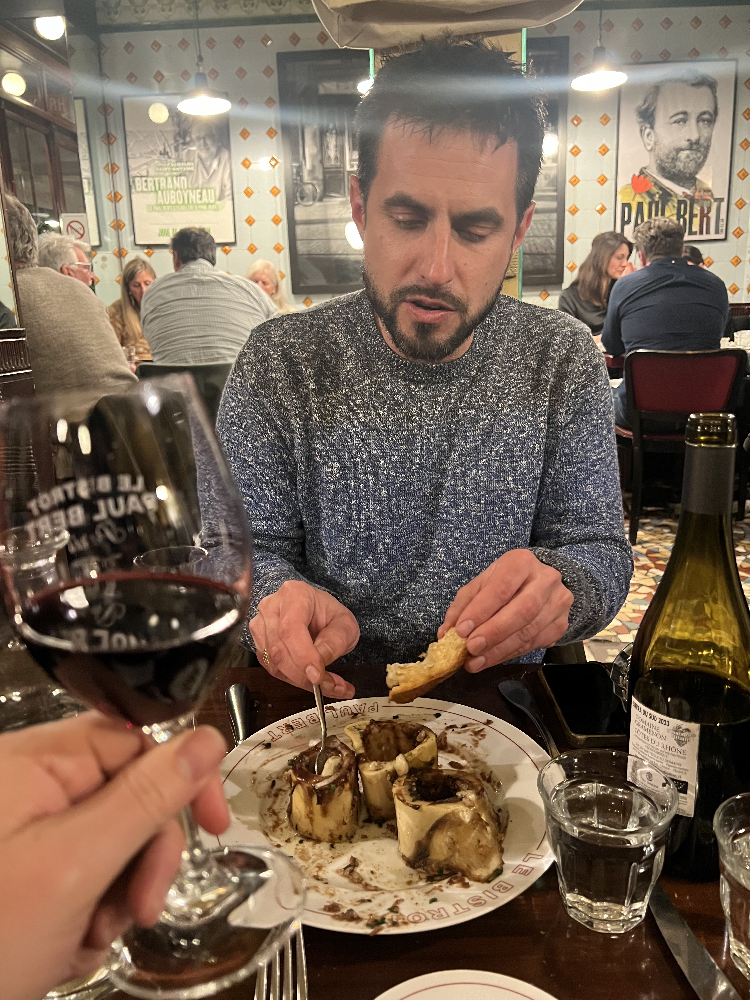
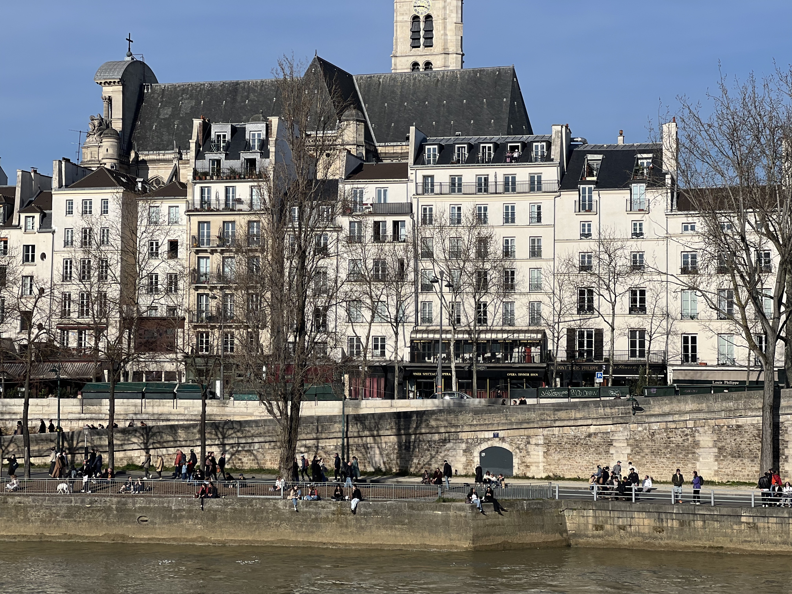
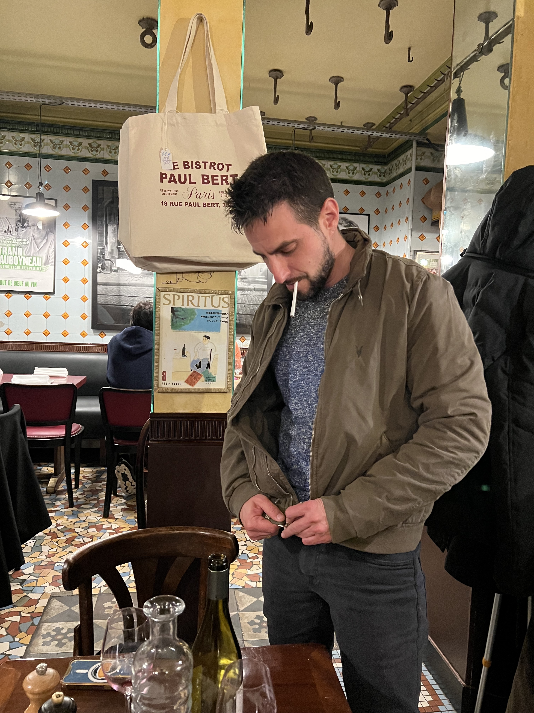
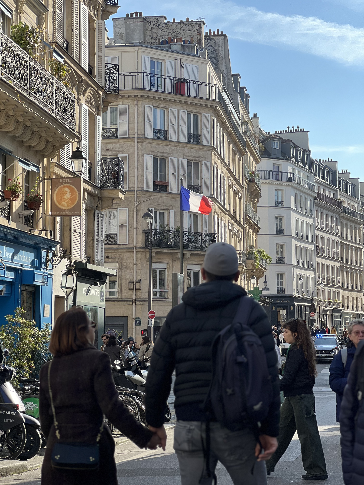
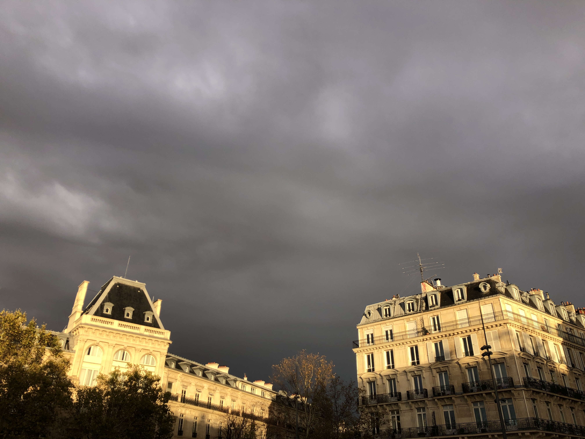
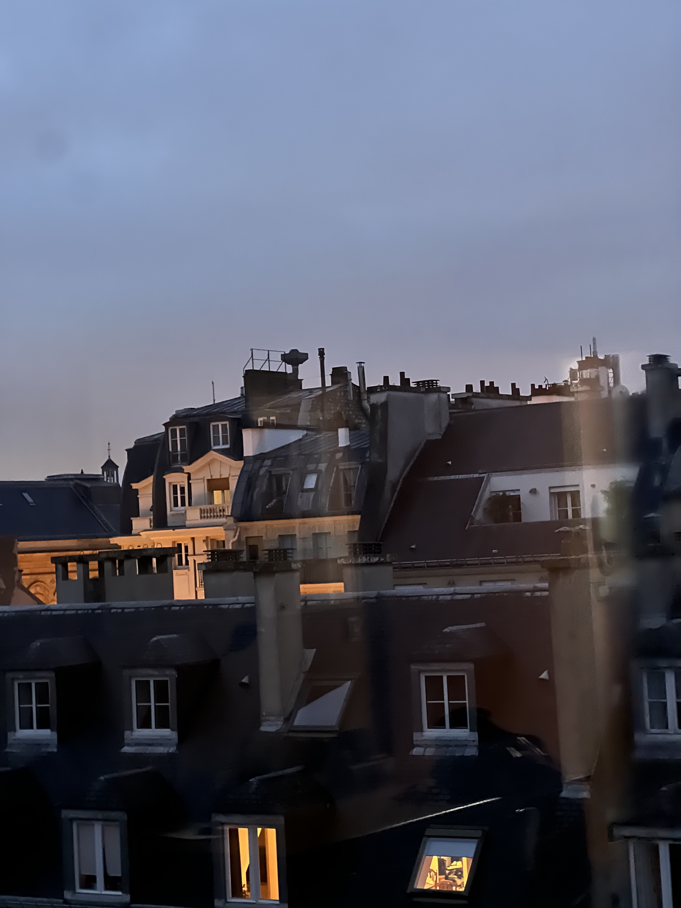

11th Arrondissement · Paris · France
Bistrot Paul Bert.
Don't think about it. Just go.
Don't think about it. Just go.
A legacy Paris bistro in the 11th. The question of where to eat dinner, answered.

If you're in Paris and you want to go to a proper legacy bistro and you don't want to spend any more mental energy on the question of where to eat dinner — just go to Paul Bert. It's in the 11th, it's been there forever, and it will deliver exactly what it promises.
The steak frites arrives in a copper pan, pink in the middle, pepper sauce pooling around the potatoes. The bone marrow is the starter that makes you feel like you understand France a little better. The wine list is serious without being pretentious. The room is tiled floors, vintage posters, the low hum of people actually enjoying themselves.
I'm not a big bone marrow person — but watching someone work through it with a piece of toast and a glass of Rhône, you start to understand the appeal. Fish is usually available — a filet de sole or similar — if you want something lighter. Either way you're in good hands. This is a place that has been doing one thing very well for a long time.
"Steak frites in the copper pan. A bottle of something red. That's the whole evening sorted."


The neighbourhood itself — the eastern 11th, around Rue Paul Bert and Rue de la Roquette — is worth an hour before dinner. Less touristy than the Marais, more lived-in. It's the Paris that still exists for the people who actually live there.
Book ahead, especially on weekends. The room fills early and the regulars know the drill. Arrive without a reservation on a Saturday and you will stand outside watching other people drink their Rhône. The number is on the bag in the photo.



Write a few lines. Add some photos. We turn it into a proper travel article. Next time someone asks you for a recommendation, you'll have a link.